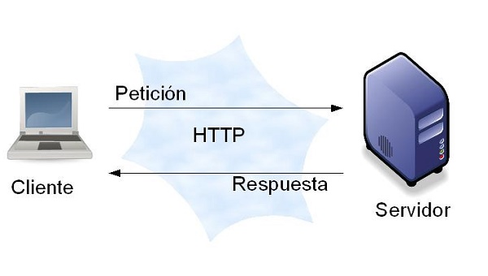
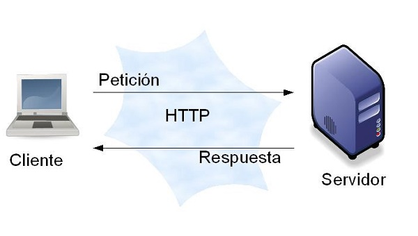
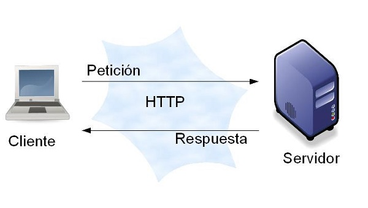

Imágenes representativas del protocolo HTTP
 

Contraseña: cuando el usuario ingresa con su contraseña, esta se transforma en un HASH y se compara con el HASH almacenado en el servidor. Si coinciden, se autentica al usuario, garantizando que la contraseña no se transmita ni se almacene como texto.
Ventajas: Alta eficiencia en la encriptación de grandes cantidades de datos.
Desventajas: La clave debe ser compartida de manera segura entre emisor y receptor. Problemas de escalabilidad al manejar múltiples claves en grandes redes.
Asimétrica: el emisor encripta los datos con la clave PÚBLICA del receptor, asegurando que solo el receptor, quien posee la clave PRIVADA correspondiente, pueda desencriptar los datos.
Se realiza un HASH del documento, luego se encripta con la clave PRIVADA del emisor. El receptor desencripta el HASH con la clave PÚBLICA del emisor y compara el HASH desencriptado con el HASH recalculado del documento para verificar la autenticidad.
En la web se usa comúnmente encriptación asimétrica para intercambiar claves de forma segura al inicio de la comunicación y luego se utiliza encriptación simétrica para la transferencia de datos, debido a su eficiencia. Esto se realiza a través de los protocolos SSL/TLS.
El protocolo HTTP no está montado directamente sobre un protocolo binario específico, sino que utiliza el protocolo TCP (Transmission Control Protocol) para la transmisión de datos de manera confiable sobre redes IP.
Clientes HTTP más utilizados: Navegadores web como Google Chrome, Mozilla Firefox, Safari, Microsoft Edge.
Servidores HTTP más utilizados: Apache HTTP Server (Apache), Nginx, Microsoft IIS, LiteSpeed.
GET: Solicita un recurso.
POST: Envía datos al servidor para procesar.
PUT: Reemplaza o crea un recurso.
DELETE: Elimina un recurso.
HEAD: Solicita solo los encabezados de la respuesta.
OPTIONS: Describe las opciones de comunicación para el recurso.
PATCH: Modifica parcialmente un recurso.
El body de un requerimiento HTTP puede contener datos que se envían al servidor, como formularios enviados por el usuario, archivos, o datos JSON, dependiendo del tipo de solicitud.
URL (Uniform Resource Locator): Es un tipo específico de URI (Uniform Resource Identifier) que proporciona los medios para localizar un recurso, incluyendo el protocolo y la dirección del recurso.
URI (Uniform Resource Identifier): Es un identificador genérico de un recurso, que puede ser un nombre, una ubicación o ambos. Todos los URLs son URIs, pero no todos los URIs son URLs.
La información relacionada con las respuestas HTTP se almacena en las cabeceras (headers) de la respuesta, como `Set-Cookie` para gestionar cookies, o `Content-Type` para indicar el tipo de contenido.
Virtual hosting es una técnica usada en servidores web para alojar múltiples dominios (sitios web) en una sola máquina física o servidor. Esto permite que diferentes sitios web compartan la misma dirección IP, diferenciándolos a través de nombres de dominio.
HTTP se considera sin estado (stateless) porque cada solicitud se realiza de manera independiente; el servidor no mantiene información sobre solicitudes anteriores realizadas por el cliente. Esto significa que cada solicitud es tratada como nueva, sin contexto de solicitudes previas.
La versión más reciente utilizada para mejorar la velocidad de la web es HTTP/2 y HTTP/3. HTTP/2 introduce técnicas como la multiplexación de conexiones, la compresión de cabeceras y el server PUSH. HTTP/3, que utiliza QUIC en lugar de TCP, también busca mejorar la velocidad y fiabilidad.
El comportamiento de una aplicación web en ambientes ruidosos o de débil conexión puede mejorarse utilizando HTTP/3, que está diseñado para ser más eficiente en conexiones de alta latencia o inestables, gracias a su uso del protocolo QUIC, que mejora la recuperación de datos perdidos y reduce los tiempos de reconexión.

debora.monteverde@comunidad.ub.edu.ar
Debora Monteverde